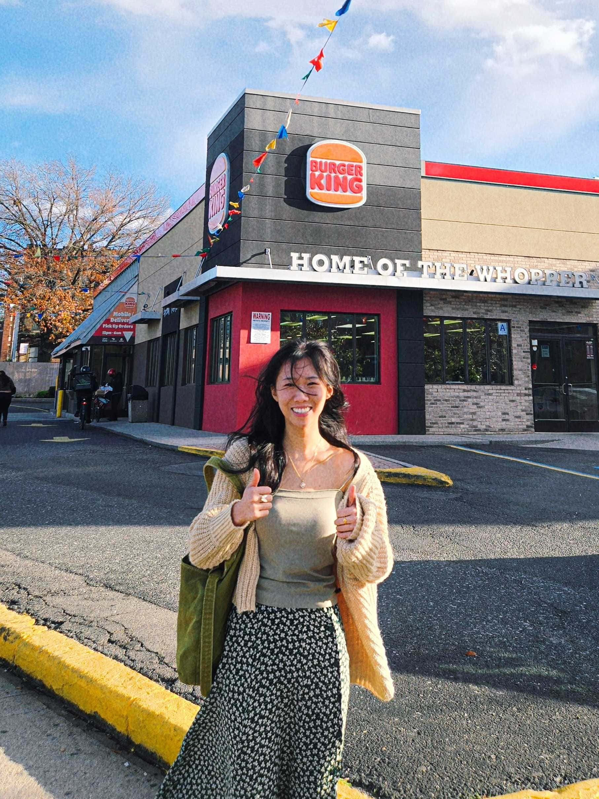
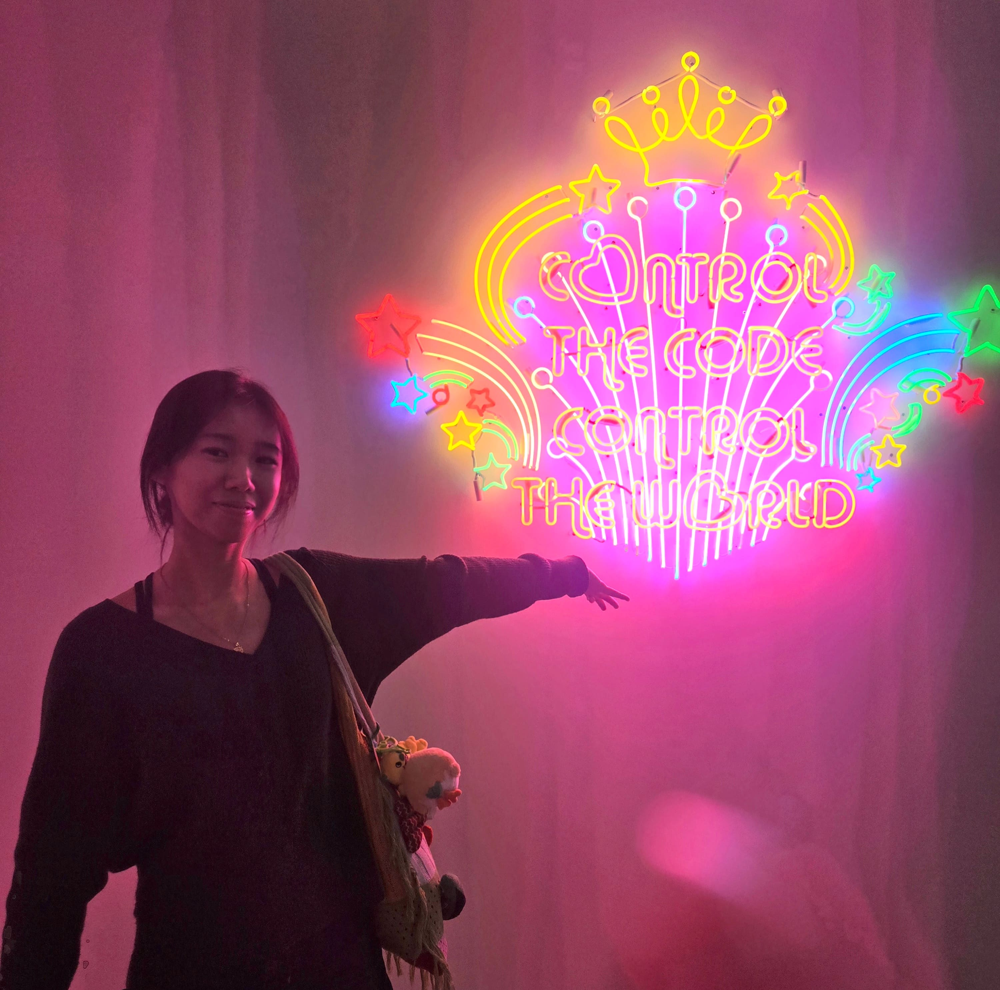
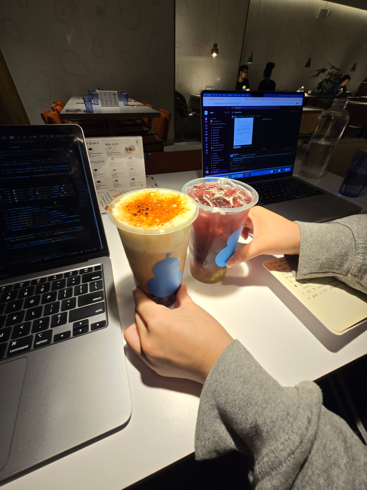
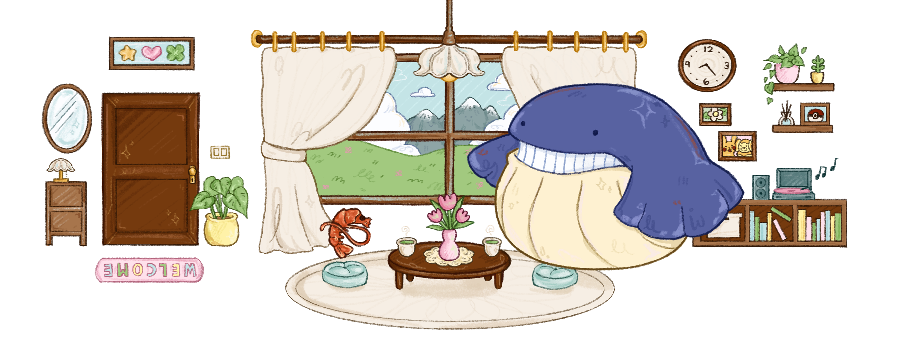
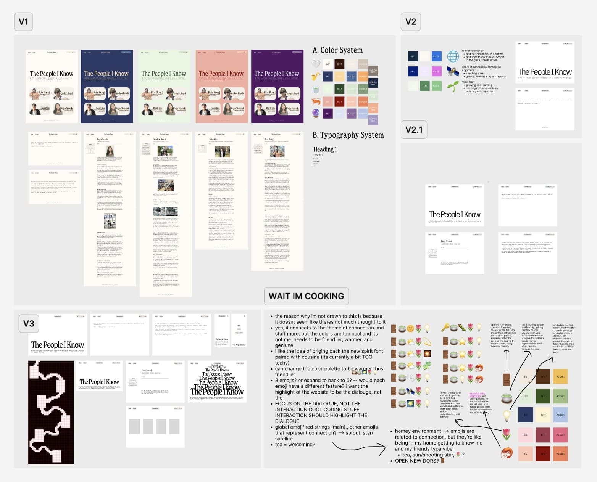

Vianna Kwok

Jumpscare! It's me. Hi I'm Vianna, the creator of The People I Know [TPIK]. To whoever’s reading this, thank you for tinkering around and exploring this site long enough to feed Wailmer. I wanted to use this space as a way to expand my thoughts and process of designing and developing this website.
GIRL MEETS CODE
I have never yearned, desired, or wanted something more in this universe than to learn how to
code.
It was like speaking a secret language but instead of talking to humans, I could talk to a
computer.
In 2023, I wanted to code my own portfolio website. I overestimated myself, confidently installed VS code, realized how steep the learning curve was, gave up and immediately uninstalled it. Since then, I have tried many many times and have given up thrice that amount. It was so frustrating. If the Lorax could speak for the trees - why couldn't I speak for those damn computers?
After my exams ended in May 2025, I started to put my foot on the pedal and aimed to achieve
this seeminly unattainable goal of mine.
No more giving up. Thus my first website came to be. You can see how that went. [Laughs] I
never moved past HTML.
In 2023, I wanted to code my own portfolio website. I overestimated myself, confidently installed VS code, realized how steep the learning curve was, gave up and immediately uninstalled it. Since then, I have tried many many times and have given up thrice that amount. It was so frustrating. If the Lorax could speak for the trees - why couldn't I speak for those damn computers?

Me @ Tai Kwun. Art by Vvzela Kook.
OOPS I DID IT AGAIN
To understand more about this project, I have to take you back to how it all started. On the
fateful day of November 2, 2025, Kaya invited
me to a creative co-working event hosted by a startup called Vega. I admired the way she
connected with people in
such a natural way.
I consider myself as an enclosed person. I don't usually ask many questions because I don't want to be perceived as nosy – but I realized there's a difference between nosiness and genuine curiosity. My only thought that evening was “Wow, I want to learn from her.” I asked: “Hey can I interview you?” and she's like “Okay!” [Laughs]
That's when the idea of collecting these conversations with people in the creative and tech fields whom I want to learn from came to be. This time I didn't give up. I couldn't. Compared to my previous goal of making my portfolio website, this website wasn't just for me. It literally involved the people I know, which motivated me to push through and finish.
How embarrasing would it be to reach out of nowhere and say "Hey! Love your work! Can I
interview you for this website I'm gonna publish?" - then telling them couple weeks later that
it's not gonna be a thing
because you gave up. Awkward. I'd probably bury myself in a hole and never forgive myself.
I consider myself as an enclosed person. I don't usually ask many questions because I don't want to be perceived as nosy – but I realized there's a difference between nosiness and genuine curiosity. My only thought that evening was “Wow, I want to learn from her.” I asked: “Hey can I interview you?” and she's like “Okay!” [Laughs]
That's when the idea of collecting these conversations with people in the creative and tech fields whom I want to learn from came to be. This time I didn't give up. I couldn't. Compared to my previous goal of making my portfolio website, this website wasn't just for me. It literally involved the people I know, which motivated me to push through and finish.

Working on TPIK w Kaya @ cafe
ME AS A URL
I wanted to embed my personality into this website as much as possible whilst centering the voices of
those I featured. Keeping the design
simple, I wanted to create a balance between my creative liberties while making sure that it doesn't take away from the knowledge
and gold I've sifted out through these conversations.
Inspired by Zero Studio's emoji bar and Talia Cotton's "design that resonates" philosophy, I curated a story through these emojis:
🚪: opening doors to meet new people or create new connections.
🍵: similar to a coffee chat, but instead of its transactional associations, my self-coined term of “tea chat” is more genuine and personal.
💡: there's always that single spark, subconscious or unconscious, when you talk to someone for the first time and you just have that gut feeling that you vibe with them. Also I just wanted a dark theme for variety.
🌷: a very friendly flower.
🦐: a non-negotiable. There's a saying that you're a reflection of people that you're friends with. Even though I'm not in touch with everyone here 24/7, the connections I have are also a reflection of me. In that sense, I wanted this website to be a reflection of me: silly, whimsical, and a bit unexpected.
Picture this: you knock on the 🚪; I open it and you're greeted with a hot cup of 🍵; we talk
and connect and experience 💡; there’s fresh 🌷 on the table; lastly I turn into Wailmer and you
find out that the tea I gave you has a magical
potion that turns you into a 🦐 and I eat you.
Inspired by Zero Studio's emoji bar and Talia Cotton's "design that resonates" philosophy, I curated a story through these emojis:
🚪: opening doors to meet new people or create new connections.
🍵: similar to a coffee chat, but instead of its transactional associations, my self-coined term of “tea chat” is more genuine and personal.
💡: there's always that single spark, subconscious or unconscious, when you talk to someone for the first time and you just have that gut feeling that you vibe with them. Also I just wanted a dark theme for variety.
🌷: a very friendly flower.
🦐: a non-negotiable. There's a saying that you're a reflection of people that you're friends with. Even though I'm not in touch with everyone here 24/7, the connections I have are also a reflection of me. In that sense, I wanted this website to be a reflection of me: silly, whimsical, and a bit unexpected.

TPIK Illustration
WHAT MADE IT WORTH IT
My favorite part about building this was seeing how it all came together in the end. I’m very
happy with how I've been able to document my friends’ journeys. I didn't add anything, only
deleted or
rearranged text to keep their voices intact to the of smallest details, like putting brackets
when they laugh so you can have an idea of their personality. There's something so special about
making sure their voices are alive in their purest form within text.
Everyone here has a trait, achievement, experience, or perspective in the world that I admire and wanted to
dive deeper in. I hope TPIK impacted you in some way or introduced you to something
new as much as it did for me. Though I still have no idea what I’m doing, I wanted my first
coding project to be something I’m proud of showing.
Well, maybe I'll look back in a few years and think, “Wow, this is shit.”

Iterations of TPIK website design
Well, maybe I'll look back in a few years and think, “Wow, this is shit.”

DOOR
8
ARCHIVE
SUBJECT: VIANNA KWOK
DATE: DEC 3, 2025
... to Clement Sen for supporting me through this crashout-inducing project and encouraging me to finish TPIK even when I felt like giving up [again], thank you... to Kaya Sasaki for inspiring this project, I'm glad I met you and can't wait to see what cool stuff you put out there... to Hank Qiu for answering my bombardment of coding questions in vivid detail, this won't be the last time...
to Everyone featured here, thank you for taking the time out of your busy lives to be here...
DATE: DEC 3, 2025
... to Clement Sen for supporting me through this crashout-inducing project and encouraging me to finish TPIK even when I felt like giving up [again], thank you... to Kaya Sasaki for inspiring this project, I'm glad I met you and can't wait to see what cool stuff you put out there... to Hank Qiu for answering my bombardment of coding questions in vivid detail, this won't be the last time...
to Everyone featured here, thank you for taking the time out of your busy lives to be here...